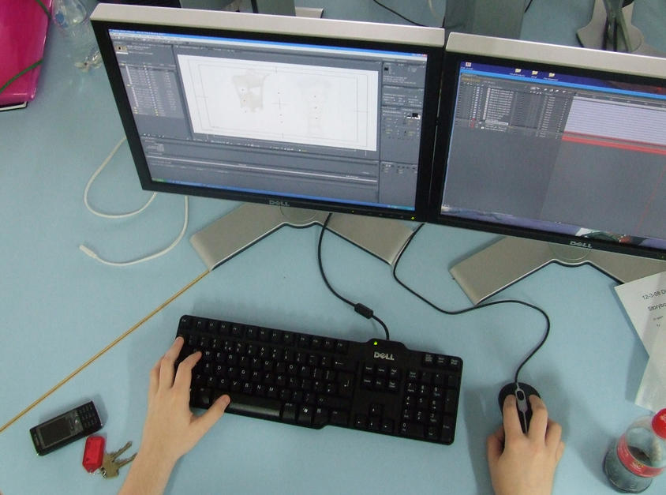

- DATOS ANTROPOMÉTRICOS
- EDAD: 22 Años
- PESO: 55Kg
- ESTATURA: 1.60m
- TEZ: Morena
- COLOR DE OJOS: Marrones oscuros
- ESTUDIOS REALIZADOS
- 2011 Educación Media General mención Ciencias
Unidad Educativa Privada "Santos Luzardo"
Miranda, Venezuela - 2013 Contaduría Pública
Univesidad Central de Venezuela
(Cursando 2do semestre)
Caracas, Venezuela - 2017 Ingeniería de Sistemas
Universidad Nacional Experimental Politécnica "Antonio José de Sucre",
Vice-rectorado "Luis Caballero Mejías"
(Cursando 8vo semestre)
Caracas, Venezuela
- 2011 Educación Media General mención Ciencias
- CURSOS Y ACTIVIDADES EXTRACURRICULARES
- Julio 2013 Instituto Oxford International Center.
Idioma: Inglés - Noviembre 2014 Centro Contable Venezolano
Asistente Contable - Febrero 2015 Seminario Evangélico de Caracas.
Taller de Resiliencia - Enero 2016 Alternativo Unexpo
Tecladista Principal - Mayo 2016 Instituto de Economía Internacional.
Introducción al Desarrollo Web
Certificado Aquí
- Julio 2013 Instituto Oxford International Center.
- HOBBIES Y AFICIONES
- Música
Toco el teclado con una inclinación especial a canciones clásicas como Bagatelle No. 25 in A minor mejor conocida como:
-
Fuer Elise - Ludwig van Beethoven.
Además, música minimal como el famoso francés Yann Tiersen
-
Rue des Cascades - Yann Tiersen
Entre otros gustos, puedo mencionar el Rock Alternativo, Progresivo, Post-Rock, el Indie en todas sus variaciones y expresiones, los soundtracks e instrumentales, el Dubstep y el Electro House, Rhythm and Blues,etc
- Series y películas
Tengo fascinación por las películas animadas, porque de hecho, he querido estudiar Animación Digital en un futuro no muy lejano. Películas clásicas como "El viaje de Chihiro" y "Mi vecino Totoro" de Hayao Miyazaki, "La Familia del futuro" y "Finding Nemo" de Walt Disney Animation Studios, "How to train your Dragon" y "Shrek" de DreamWorks Animation (por mencionar algunas) han tenido una poderosa influcencia en mí para realizar e incursionar en esta carrera tan interesante y compleja. Además, siento una extraña inclinación por el arte en Stop Motion, soñando algún día poder conocer a Laika Studios.
Claro que también vengo del 94, cuando series como "Hey! Arnold" , "Invader Zim" , Dexter's Lab produjeron en mi atracción al medio. Me encanta la saga de "Harry Potter" , "El Señor de los Anillos" y "El nombre del viento" por su complejidad y personajes definidos. Soy amante a la lectura y soy una persona dispuesta a explorar diferentes corrientes de pensamientos e ideales.

- TRABAJOS REALIZADOS
- MACRO EN EXCEL
- EDAD
- LIBRO
- CALCULADORA
- TABLA
- MARTE
Programa para ingresar los resultados académicos de los estudiantes de una institución y determinar su estado (VB)
Programa para calcular la edad de una persona (C++)
Programa para calcular caracteristicas de un libro e interacción (POO)
Calculadora simple (C++)
Tabla de multiplicar de cualquier número (C++)
Peso en marte (JavaScript)
- REFERENCIAS PERSONALES
- CONTACTO
También puedes contactarme por medio de mis redes sociales en: